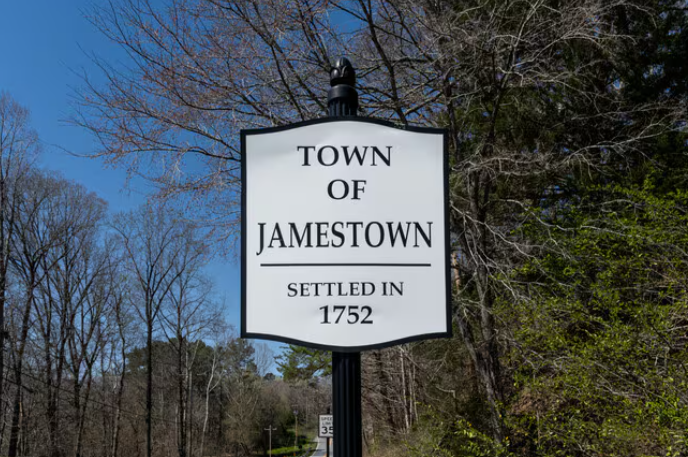
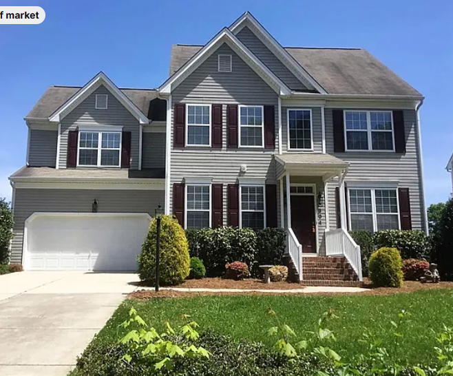

Welcome to the Jamestown oaks community guide! The town has history dating back to the 1700's. The area was founded by Quaker families, most noteably James Mendenhall, who established a farm near present-day Jamestown in 1752. George Mendenhall, his son, later founded Jamestown village in 1816, he chose to name it in honor of his father. By 1800, Jamestown was a bustling settlement of 150 residents with its own post office, inn and Freemasons' lodge. Around this same time, gold was discovered near Jamestown, and several mines profited until the California Gold Rush frenzy shut down local efforts. In addition to farming and related industries, Jamestown was home to a gun factory, which manufactured a sturdy and accurate muzzle-loading gun known as the "Jamestown Rifle", the mainstay of Jamestown's industry through the latter half of the 19th century and a highly prized collectible among gun enthusiasts today. By April 1947, the North Carolina General Assembly granted Jamestown incorporation. Several months after incorporation, Jamestown adopted zoning districts and began construction of a municipal water system. During the 1960s, Jamestown grew quickly. Several residential neighborhoods sprang from old farmland. An ABC board was formed and a liquor store was constructed, enabling the town to pay off debt incurred for water lines as well as fund a sanitary sewer system, storm sewers, paved residential streets, the building of Town Hall in 1967, and the Jamestown Park and Golf Course in 1974. High Point's ABC board opened their first liquor store in 1976, ending Jamestown's remarkable flow of revenue.

$374,400 4 Bed, 2 Bath, 2,377 sqft
304 Jamestown Oaks Dr, Jamestown, NC 27282